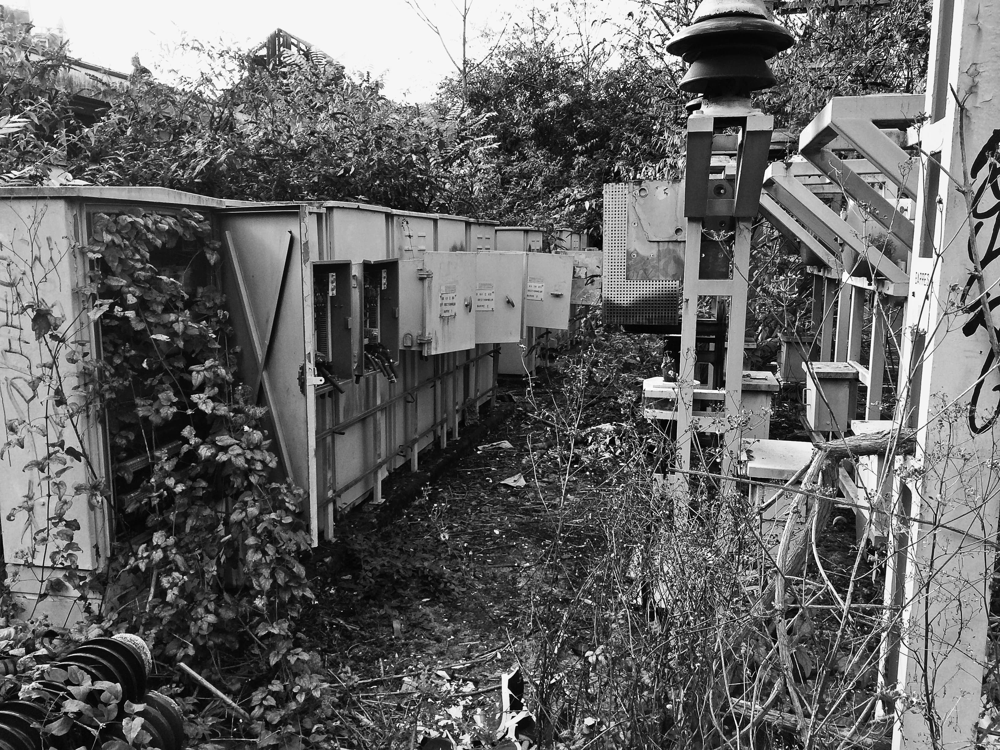

Le Transfo de Bagnolet
Lorsque l’on traverse le quartier de la Capsulerie à Bagnolet en Seine-Saint-Denis, près du terminus Gallieni de la ligne 3 du métro, trois immeubles neufs attirent l’attention par leur petite taille et leurs terrasses végétalisées. Face aux grands ensembles de la cité Centre Sud construits durant les Trente Glorieuses, les trois bâtiments de la rue de la Capsulerie jouent la carte de la mixité et de la cohésion sociale et environnementale : regroupant 396 appartements, dont 177 destinés à l’habitat social et intermédiaire, y compris étudiant, ils ambitionnent d’offrir un logement plus humain que les premières tours HLM.
Le projet est porté par le développeur immobilier Novaxia, spécialisé dans la transformation de zones délaissées. Cette ancienne friche industrielle de 4 000 m2 aux portes de Paris a accueilli des transformateurs électriques d’EDF, qui ont provoqué une pollution des terres au pyralène, un isolant hautement toxique longtemps utilisé dans les industries électriques et désormais interdit en France.
Transformateur en désuétude à Bagnolet. Source : Novaxia.

Transformateur en désuétude à Bagnolet. Source : Novaxia.
C’est pourquoi 20 000 m3 de terre ont dû être excavés dans le cadre des opérations de dépollutionLaurence Albert, « À Bagnolet, un ex-site EDF se mue en logements », Les Échos, 7 novembre 2018.. Resté jusqu’en 2014 la propriété des filiales nées de la scission d’EDF, le site était à l’abandon depuis une décennie avant de devenir le Transfo lors de son occupation, en 2012, par des squatteur·se·s chassé·e·s de leur précédent squat de Montreuil.

Squat du Transfo à Bagnolet. Photo : squat!net.
Les transformateurs électriques sont mis au point à la fin du XIXe siècle par deux ingénieurs, l’Anglais John Dixon Gibbs et le Français Lucien Gaulard, qui les désignent à l’époque comme des « générateurs secondaires ».
Le premier transformateur de Gaulard et Gibbs (1882). Image : Musée Électropolis.
Ils ont une place centrale dans le fonctionnement des sociétés qui se sont développées en Europe occidentale depuis les Trente Glorieuses – qu’une nouvelle génération d’historien·ne·sCéline Pessis, Sezin Topçu et Christophe Bonneuil (dir.), Une autre histoire des « Trente Glorieuses ». Modernisation, contestations et pollutions dans la France d’après-guerre, Paris, La Découverte, 2013. propose de renommer les « Trente Ravageuses » pour souligner leur dimension énergivore. Composés d’au moins un noyau de fer et de bobines en cuivre, les transformateurs sont des circuits magnétiques fermés qui, placés à proximité des lieux de consommation, permettent d’abaisser et d’élever la tension d’un circuit électrique. Autrement dit, ils rendent l’électricité non seulement consommable à risque maîtrisé, mais également transportable de façon économiquement viable.
L’ancien site de Bagnolet, temporairement squatté avant d’être investi par un développeur immobilier, est symboliquement intéressant pour deux raisons. Tout d’abord, les transformateurs électriques racontent une histoire de l’industrialisation et de la désindustrialisation française au XXe siècle, qu’ils aient été cachés derrière de sobres façades d’habitation, comme aujourd’hui les data centers, ou installés dans des architectures de nos jours restaurées et mises en avant. Une importante partie de cette histoire s’est jouée à Bagnolet. Cette ville limitrophe de la capitale accueillit très rapidement non seulement les ouvrier·e·s venu·e·s travailler à Paris, mais aussi les entreprises fleurons de l’industrie française. Le site tomba en désuétude avec la délocalisation de ces entreprises, rappelant à quel point l’électrification, l’industrialisation et la désindustrialisation vont de pairAlain Beltran, L’Électricité dans la région parisienne 1878-1946, Paris, Éditions Rive Droite, 2002..
Porche de l’usine d’emboutissage Moulinex à Bagnolet. Photo : Farouk Derdour, Archives départementales de la Seine-Saint-Denis.
De plus, les réappropriations successives dont le site de Bagnolet a été l’objet témoignent de deux conceptions assez différentes d’une vie dans les « ruines du capitalisme », expression empruntée à l’anthropologue américaine Anna L. TsingVoir bibliographie.. Celle tout d’abord défendue par le squat des « Transfous », ainsi que ses occupant·e·s se sont nommé·e·s. Si le squat ne porte pas, contrairement aux squatteur·se·s amsterdamois·es et ouest-berlinois·es des années 1980, le projet explicite de rejeter la société marchande à travers le choix d’une vie déconnectée des infrastructures modernes, c’est-à-dire de l’eau et de l’électricité, les Transfous s’attachent à un projet sociétal clairement alternatif en termes de production d’énergie. Ils occupent délibérément un site d’EDF, ce mastodonte de l’industrie française dont ils rejettent d’une part la production d’électricité par le nucléaire qui « empoisonne la vie », et condamnent d’autre part les activités dans la spéculation immobilière. Dans une logique d’appropriation des outils dont ils dépendent au quotidien, ils se sont formés à la soudure pour gérer l’électricité du lieu et ont même appris, s’inspirant du pionnier écossais Hugh Piggott, à fabriquer une éolienne, destinée à la ZAD de Notre-Dame-des-Landes.
Construction de l’éolienne de Hugh Piggott. Avec son aimable autorisation.
Leur succèdent sur le site Novaxia et ses partenaires. Aux antipodes du squat du Transfo, ils envisagent de renouveler l’« habitat social » pour le XXIe siècle à travers un partenariat public-privé et s’adressent aux classes moyennes inférieures du Grand Paris. Leur projet est emblématique du double processus de métropolisation et de gentrification en cours dans la capitale, qui a vu le prix de l’immobilier tripler en vingt ans, alors que le revenu disponible des ménages n’a progressé que de 40 %. Selon les estimations des notaires, les prix des logements existants ont même monté de 17 % à Bagnolet durant la seule période comprise entre 2013 et 2018, contre une hausse de 8 % en moyenne dans l’ensemble du département de la Seine-Saint-Denis. Les travaux de la sociologue Anne Clerval montrent le paradoxe de la disparition progressive, et souvent invisible, des populations les plus fragiles de ces quartiers. Ce qu’elle appelle, dans son livre Paris sans le peupleVoir bibliographie., la nouvelle « petite bourgeoisie intellectuelle » participe largement à ces phénomènes et ce, malgré elle et à l’encontre des valeurs solidaires, écologistes et féministes qui sont souvent les siennes.
Le site des transformateurs de Bagnolet, qui pendant des décennies a discrètement servi l’industrie de l’électroménager pour tou·te·s, a connu une visibilité éphémère durant son occupation par des squatteur·se·s qui en ont fait un objet politique. Il appartient désormais à un patrimoine disparu, qui laisse place au développement immobilier et social du Grand Paris du XXIe siècle. À l’inverse, la sous-station électrique de la rue Récamier, dans le VIIe arrondissement de Paris, construite en 1910 dans le style Art nouveau par l’architecte Paul Friesé pour alimenter le quartier, a été « muséalisée » et accueille, depuis 1990, la Fondation d’EDF à laquelle elle sert de lieu d’exposition.
L’espace fondation EDF, rue Récamier, VIIe arrondissement de Paris. Photo : Pierre Bérenger.
À l’heure où les pays occidentaux entament des transitions écologiques plus ou moins ambitieuses, regarder de plus près la montée en puissance, l’abandon et les mutations des sites qui accueillirent autrefois des transformateurs électriques peut servir d’heuristique de recherche pour mettre en lumière les co-évolutions des réseaux, des systèmes techniques et des sociétés occidentales depuis soixante-dix ans. Alors que le gestionnaire du réseau d’électricité ENEDIS développe au pont de l’Alma à Paris un vaste projet d’infrastructure visant à sécuriser l’alimentation électrique de la capitale et à « anticiper la demande en électricité de la zone en vue des JO 2024 », notamment par la mise en place de réseaux dits « intelligents », ou smart grids, on peut se demander quelles seront les implications sociales des choix techniques qui accompagnent le développement du Grand Paris.
Bibliographie
- BELTRAN Alain, L’Électricité dans la région parisienne 1878-1946, Paris, Éditions Rive Droite, 2002.
- CLERVAL Anne, Paris sans le peuple. La gentrification de la capitale, Paris, La Découverte, 2013.
- HUGHES Thomas P., « The Seamless Web : Technology, Science, Etcetera, Etcetera », Social Studies of Science, 16 (2), 1986, p. 281-292.
- PESSIS Céline, TOPÇU Sezin et BONNEUIL Christophe (dir.), Une autre histoire des « Trente Glorieuses ». Modernisation, contestations et pollutions dans la France d’après-guerre, Paris, La Découverte, 2013.
- TSING Anna L., Le Champignon de la fin du monde. Sur les possibilités de vivre dans les ruines du capitalisme, Paris, La Découverte, 2017.